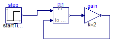

Simple steady state initialization of a PI controller as FMU leading to a linear system of equations over FMUs during initialization
Information
With this test model it is tested how the initialization of an FMU
can be changed in the environment where this FMU is used. The FMU is a PI controller
that is initialized in steady state which in turn leads to a constraint on the inputs.
However, this cannot be directly formulated as FMU. The implementation is performed
in the following way:
- In order that the causality of the FMU of the input signals does not
change during initialization, a dependent parameter "residue" with
initialization fixed = false is introduced. In case the inputs follow
the constraint of the PI initialization, residue is computed to zero
(as it should be).
- The FMU initialization is not yet complete, since the PI state is not
defined during initialization. Therefore, the PI state is initialized.
- When used in the environment without special handling, the PI-controller
is initialized so that PI.x has the given start value and the parameter
residue = u1 - u2. To formulate the desired steady-state condition,
the initial value of the PI state is associated with n parameter x0 with
fixed = false (so this parameter is computed).
Now, one initial condition is missing and it is introduced by adding the
initial equation "residue = 0". Note, when generating the FMU, parameter PI.residue
should have "causality = output" and "variability = fixed" (since public, dependent
parameter).
-
Extends from Modelica.Icons.ExamplesPackage (Icon for packages containing runnable examples).
Package Content
| Name |
Description |
 WithFMUsReference WithFMUsReference
|
Reference solution in pure Modelica using exactly the same structuring as in Model WithFMUs |
| WithFMUs
|
Solution with FMUs |
 FMUModels FMUModels
|
For all models in this package an FMU must be generated |
Reference solution in pure Modelica using exactly the same structuring as in Model WithFMUs

Information
Extends from Modelica.Icons.Example (Icon for runnable examples).
Parameters
| Type | Name | Default | Description |
|---|
| Real | x0 | | |
Modelica definition
model WithFMUsReference
"Reference solution in pure Modelica using exactly the same structuring as in Model WithFMUs"
extends Modelica.Icons.Example;
parameter Real x0(start=0,fixed=false);
FMUModels.PI PI1(x(start=x0));
Modelica.Blocks.Sources.Step step(startTime=0.1, offset=0.2);
Modelica.Blocks.Math.Gain gain(k=2);
initial equation
PI1.residue = 0.0;
equation
connect(step.y, PI1.u1);
connect(PI1.y, gain.u);
connect(gain.y, PI1.u2);
end WithFMUsReference;
Solution with FMUs
Information
Extends from Modelica.Icons.Example (Icon for runnable examples).
Parameters
| Type | Name | Default | Description |
|---|
| Real | x0 | | |
Modelica definition
Automatically generated Fri Apr 25 16:23:27 2014.
 FMITest.Initialization.LinearSystems.SimpleSteadyState2.WithFMUsReference
FMITest.Initialization.LinearSystems.SimpleSteadyState2.WithFMUsReference